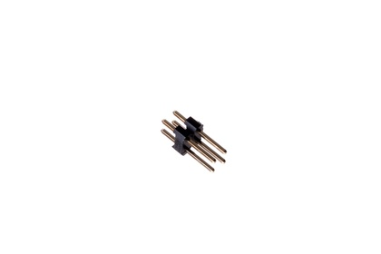

2.54 mm 4 Pin (2x2) Header - H2X02

Summary
Name: 2.54 mm 4 Pin (2x2) Header
ID: HEAD-I01-X-2X02PI-01
Hex ID: H2X02
WebPage: https://github.com/oomlout/oomlout-OOMP/wiki/HEAD-I01-X-2X02PI-01
Short URL: http://oom.lt/H2X02
Revision History: https://github.com/oomlout/oomlout-OOMP/blob/master/parts/HEAD-I01-X-2X02PI-01/
| Type |
Size |
Color |
Description |
Index |
HEAD
Header |
I01
2.54 mm |
X
|
2X02PI
4 Pin (2x2) |
01
|
Images
About
This part is awaiting a description.
Specifications
| Info |
Value |
| Type |
Header |
| Size |
2.54 mm |
| Description |
4 Pin (2x2) |
| Pitch |
2.54 mm |
| Width |
5.08mm |
| Height |
11.8 mm |
| Length |
5.08 mm |
| Number of Pins |
4 |
Extra Details
Spotted a mistake, want to add more? Let us know oomp@oomlout.com
All images and resources are licensed [CC BY-SA] unless otherwise stated (ie. the datasheets)